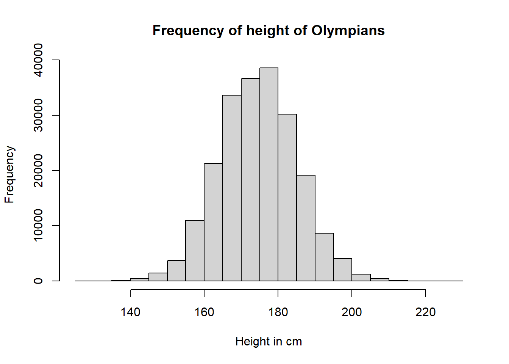

Variable |
Total|> |
F |
M |
P |
|---|---|---|---|---|
| Country | <0.001 | |||
| AFG | 126 (<0.1%) | 5 (<0.1%) | 121 (<0.1%) | |
| AHO | 79 (<0.1%) | 12 (<0.1%) | 67 (<0.1%) | |
| ALB | 70 (<0.1%) | 27 (<0.1%) | 43 (<0.1%) | |
| ALG | 551 (0.2%) | 94 (0.1%) | 457 (0.2%) | |
| AND | 169 (<0.1%) | 42 (<0.1%) | 127 (<0.1%) | |
| ANG | 267 (<0.1%) | 129 (0.2%) | 138 (<0.1%) | |
| ANT | 133 (<0.1%) | 37 (<0.1%) | 96 (<0.1%) | |
| ANZ | 86 (<0.1%) | 2 (<0.1%) | 84 (<0.1%) | |
| ARG | 3,297 (1.2%) | 643 (0.9%) | 2,654 (1.3%) | |
| ARM | 221 (<0.1%) | 38 (<0.1%) | 183 (<0.1%) | |
| ARU | 42 (<0.1%) | 16 (<0.1%) | 26 (<0.1%) | |
| ASA | 37 (<0.1%) | 7 (<0.1%) | 30 (<0.1%) | |
| AUS | 7,638 (2.8%) | 2,749 (3.7%) | 4,889 (2.5%) | |
| AUT | 5,141 (1.9%) | 1,100 (1.5%) | 4,041 (2.1%) | |
| AZE | 283 (0.1%) | 71 (<0.1%) | 212 (0.1%) | |
| BAH | 374 (0.1%) | 100 (0.1%) | 274 (0.1%) | |
| BAN | 55 (<0.1%) | 13 (<0.1%) | 42 (<0.1%) | |
| BAR | 219 (<0.1%) | 39 (<0.1%) | 180 (<0.1%) | |
| BDI | 39 (<0.1%) | 14 (<0.1%) | 25 (<0.1%) | |
| BEL | 3,857 (1.4%) | 604 (0.8%) | 3,253 (1.7%) | |
| BEN | 71 (<0.1%) | 14 (<0.1%) | 57 (<0.1%) | |
| BER | 212 (<0.1%) | 41 (<0.1%) | 171 (<0.1%) | |
| BHU | 36 (<0.1%) | 17 (<0.1%) | 19 (<0.1%) | |
| BIH | 134 (<0.1%) | 39 (<0.1%) | 95 (<0.1%) | |
| BIZ | 76 (<0.1%) | 9 (<0.1%) | 67 (<0.1%) | |
| BLR | 1,787 (0.7%) | 794 (1.1%) | 993 (0.5%) | |
| BOH | 153 (<0.1%) | 2 (<0.1%) | 151 (<0.1%) | |
| BOL | 152 (<0.1%) | 36 (<0.1%) | 116 (<0.1%) | |
| BOT | 90 (<0.1%) | 7 (<0.1%) | 83 (<0.1%) | |
| BRA | 3,848 (1.4%) | 1,148 (1.5%) | 2,700 (1.4%) | |
| BRN | 126 (<0.1%) | 31 (<0.1%) | 95 (<0.1%) | |
| BRU | 10 (<0.1%) | 2 (<0.1%) | 8 (<0.1%) | |
| BUL | 3,530 (1.3%) | 1,069 (1.4%) | 2,461 (1.3%) | |
| BUR | 44 (<0.1%) | 15 (<0.1%) | 29 (<0.1%) | |
| CAF | 67 (<0.1%) | 16 (<0.1%) | 51 (<0.1%) | |
| CAM | 63 (<0.1%) | 17 (<0.1%) | 46 (<0.1%) | |
| CAN | 9,733 (3.6%) | 3,563 (4.8%) | 6,170 (3.1%) | |
| CAY | 83 (<0.1%) | 12 (<0.1%) | 71 (<0.1%) | |
| CGO | 105 (<0.1%) | 35 (<0.1%) | 70 (<0.1%) | |
| CHA | 41 (<0.1%) | 10 (<0.1%) | 31 (<0.1%) | |
| CHI | 925 (0.3%) | 118 (0.2%) | 807 (0.4%) | |
| CHN | 5,141 (1.9%) | 2,770 (3.7%) | 2,371 (1.2%) | |
| CIV | 193 (<0.1%) | 58 (<0.1%) | 135 (<0.1%) | |
| CMR | 312 (0.1%) | 94 (0.1%) | 218 (0.1%) | |
| COD | 93 (<0.1%) | 25 (<0.1%) | 68 (<0.1%) | |
| COK | 40 (<0.1%) | 16 (<0.1%) | 24 (<0.1%) | |
| COL | 1,069 (0.4%) | 295 (0.4%) | 774 (0.4%) | |
| COM | 19 (<0.1%) | 8 (<0.1%) | 11 (<0.1%) | |
| CPV | 18 (<0.1%) | 9 (<0.1%) | 9 (<0.1%) | |
| CRC | 264 (<0.1%) | 65 (<0.1%) | 199 (0.1%) | |
| CRO | 876 (0.3%) | 236 (0.3%) | 640 (0.3%) | |
| CRT | 11 (<0.1%) | 0 (0%) | 11 (<0.1%) | |
| CUB | 2,479 (0.9%) | 588 (0.8%) | 1,891 (1.0%) | |
| CYP | 225 (<0.1%) | 58 (<0.1%) | 167 (<0.1%) | |
| CZE | 1,874 (0.7%) | 696 (0.9%) | 1,178 (0.6%) | |
| DEN | 3,570 (1.3%) | 710 (1.0%) | 2,860 (1.5%) | |
| DJI | 38 (<0.1%) | 5 (<0.1%) | 33 (<0.1%) | |
| DMA | 19 (<0.1%) | 7 (<0.1%) | 12 (<0.1%) | |
| DOM | 277 (0.1%) | 72 (<0.1%) | 205 (0.1%) | |
| ECU | 277 (0.1%) | 64 (<0.1%) | 213 (0.1%) | |
| EGY | 1,622 (0.6%) | 181 (0.2%) | 1,441 (0.7%) | |
| ERI | 43 (<0.1%) | 6 (<0.1%) | 37 (<0.1%) | |
| ESA | 218 (<0.1%) | 66 (<0.1%) | 152 (<0.1%) | |
| ESP | 5,313 (2.0%) | 1,439 (1.9%) | 3,874 (2.0%) | |
| EST | 876 (0.3%) | 221 (0.3%) | 655 (0.3%) | |
| ETH | 378 (0.1%) | 92 (0.1%) | 286 (0.1%) | |
| EUN | 864 (0.3%) | 326 (0.4%) | 538 (0.3%) | |
| FIJ | 232 (<0.1%) | 67 (<0.1%) | 165 (<0.1%) | |
| FIN | 5,467 (2.0%) | 992 (1.3%) | 4,475 (2.3%) | |
| FRA | 12,758 (4.7%) | 2,781 (3.7%) | 9,977 (5.1%) | |
| FRG | 3,315 (1.2%) | 912 (1.2%) | 2,403 (1.2%) | |
| FSM | 26 (<0.1%) | 11 (<0.1%) | 15 (<0.1%) | |
| GAB | 63 (<0.1%) | 15 (<0.1%) | 48 (<0.1%) | |
| GAM | 56 (<0.1%) | 13 (<0.1%) | 43 (<0.1%) | |
| GBR | 12,256 (4.5%) | 3,277 (4.4%) | 8,979 (4.6%) | |
| GBS | 21 (<0.1%) | 8 (<0.1%) | 13 (<0.1%) | |
| GDR | 2,645 (1.0%) | 931 (1.2%) | 1,714 (0.9%) | |
| GEO | 286 (0.1%) | 72 (<0.1%) | 214 (0.1%) | |
| GEQ | 40 (<0.1%) | 11 (<0.1%) | 29 (<0.1%) | |
| GER | 9,830 (3.6%) | 2,999 (4.0%) | 6,831 (3.5%) | |
| GHA | 359 (0.1%) | 58 (<0.1%) | 301 (0.2%) | |
| GRE | 3,181 (1.2%) | 655 (0.9%) | 2,526 (1.3%) | |
| GRN | 54 (<0.1%) | 17 (<0.1%) | 37 (<0.1%) | |
| GUA | 425 (0.2%) | 75 (0.1%) | 350 (0.2%) | |
| GUI | 73 (<0.1%) | 15 (<0.1%) | 58 (<0.1%) | |
| GUM | 112 (<0.1%) | 27 (<0.1%) | 85 (<0.1%) | |
| GUY | 102 (<0.1%) | 21 (<0.1%) | 81 (<0.1%) | |
| HAI | 106 (<0.1%) | 19 (<0.1%) | 87 (<0.1%) | |
| HKG | 685 (0.3%) | 222 (0.3%) | 463 (0.2%) | |
| HON | 189 (<0.1%) | 39 (<0.1%) | 150 (<0.1%) | |
| HUN | 6,607 (2.4%) | 1,748 (2.3%) | 4,859 (2.5%) | |
| INA | 412 (0.2%) | 136 (0.2%) | 276 (0.1%) | |
| IND | 1,408 (0.5%) | 241 (0.3%) | 1,167 (0.6%) | |
| IOA | 94 (<0.1%) | 29 (<0.1%) | 65 (<0.1%) | |
| IRI | 789 (0.3%) | 49 (<0.1%) | 740 (0.4%) | |
| IRL | 1,325 (0.5%) | 283 (0.4%) | 1,042 (0.5%) | |
| IRQ | 232 (<0.1%) | 7 (<0.1%) | 225 (0.1%) | |
| ISL | 627 (0.2%) | 129 (0.2%) | 498 (0.3%) | |
| ISR | 665 (0.2%) | 207 (0.3%) | 458 (0.2%) | |
| ISV | 294 (0.1%) | 57 (<0.1%) | 237 (0.1%) | |
| ITA | 10,715 (4.0%) | 2,543 (3.4%) | 8,172 (4.2%) | |
| IVB | 45 (<0.1%) | 5 (<0.1%) | 40 (<0.1%) | |
| JAM | 848 (0.3%) | 366 (0.5%) | 482 (0.2%) | |
| JOR | 80 (<0.1%) | 23 (<0.1%) | 57 (<0.1%) | |
| JPN | 8,444 (3.1%) | 2,779 (3.7%) | 5,665 (2.9%) | |
| KAZ | 1,429 (0.5%) | 549 (0.7%) | 880 (0.4%) | |
| KEN | 772 (0.3%) | 159 (0.2%) | 613 (0.3%) | |
| KGZ | 227 (<0.1%) | 54 (<0.1%) | 173 (<0.1%) | |
| KIR | 11 (<0.1%) | 3 (<0.1%) | 8 (<0.1%) | |
| KOR | 4,464 (1.6%) | 1,490 (2.0%) | 2,974 (1.5%) | |
| KOS | 8 (<0.1%) | 5 (<0.1%) | 3 (<0.1%) | |
| KSA | 230 (<0.1%) | 5 (<0.1%) | 225 (0.1%) | |
| KUW | 284 (0.1%) | 4 (<0.1%) | 280 (0.1%) | |
| LAO | 54 (<0.1%) | 12 (<0.1%) | 42 (<0.1%) | |
| LAT | 951 (0.4%) | 197 (0.3%) | 754 (0.4%) | |
| LBA | 84 (<0.1%) | 11 (<0.1%) | 73 (<0.1%) | |
| LBR | 74 (<0.1%) | 13 (<0.1%) | 61 (<0.1%) | |
| LCA | 28 (<0.1%) | 13 (<0.1%) | 15 (<0.1%) | |
| LES | 66 (<0.1%) | 15 (<0.1%) | 51 (<0.1%) | |
| LIB | 329 (0.1%) | 41 (<0.1%) | 288 (0.1%) | |
| LIE | 369 (0.1%) | 75 (0.1%) | 294 (0.1%) | |
| LTU | 654 (0.2%) | 209 (0.3%) | 445 (0.2%) | |
| LUX | 996 (0.4%) | 73 (<0.1%) | 923 (0.5%) | |
| MAD | 119 (<0.1%) | 48 (<0.1%) | 71 (<0.1%) | |
| MAL | 45 (<0.1%) | 1 (<0.1%) | 44 (<0.1%) | |
| MAR | 682 (0.3%) | 92 (0.1%) | 590 (0.3%) | |
| MAS | 530 (0.2%) | 101 (0.1%) | 429 (0.2%) | |
| MAW | 87 (<0.1%) | 14 (<0.1%) | 73 (<0.1%) | |
| MDA | 234 (<0.1%) | 64 (<0.1%) | 170 (<0.1%) | |
| MDV | 49 (<0.1%) | 12 (<0.1%) | 37 (<0.1%) | |
| MEX | 2,880 (1.1%) | 649 (0.9%) | 2,231 (1.1%) | |
| MGL | 550 (0.2%) | 149 (0.2%) | 401 (0.2%) | |
| MHL | 14 (<0.1%) | 7 (<0.1%) | 7 (<0.1%) | |
| MKD | 84 (<0.1%) | 33 (<0.1%) | 51 (<0.1%) | |
| MLI | 92 (<0.1%) | 29 (<0.1%) | 63 (<0.1%) | |
| MLT | 118 (<0.1%) | 31 (<0.1%) | 87 (<0.1%) | |
| MNE | 94 (<0.1%) | 36 (<0.1%) | 58 (<0.1%) | |
| MON | 197 (<0.1%) | 18 (<0.1%) | 179 (<0.1%) | |
| MOZ | 78 (<0.1%) | 23 (<0.1%) | 55 (<0.1%) | |
| MRI | 144 (<0.1%) | 51 (<0.1%) | 93 (<0.1%) | |
| MTN | 29 (<0.1%) | 5 (<0.1%) | 24 (<0.1%) | |
| MYA | 111 (<0.1%) | 24 (<0.1%) | 87 (<0.1%) | |
| NAM | 77 (<0.1%) | 28 (<0.1%) | 49 (<0.1%) | |
| NBO | 2 (<0.1%) | 0 (0%) | 2 (<0.1%) | |
| NCA | 129 (<0.1%) | 22 (<0.1%) | 107 (<0.1%) | |
| NED | 5,839 (2.2%) | 1,924 (2.6%) | 3,915 (2.0%) | |
| NEP | 94 (<0.1%) | 24 (<0.1%) | 70 (<0.1%) | |
| NFL | 1 (<0.1%) | 0 (0%) | 1 (<0.1%) | |
| NGR | 882 (0.3%) | 309 (0.4%) | 573 (0.3%) | |
| NIG | 47 (<0.1%) | 10 (<0.1%) | 37 (<0.1%) | |
| NOR | 4,960 (1.8%) | 1,130 (1.5%) | 3,830 (1.9%) | |
| NRU | 13 (<0.1%) | 2 (<0.1%) | 11 (<0.1%) | |
| NZL | 2,342 (0.9%) | 784 (1.1%) | 1,558 (0.8%) | |
| OMA | 66 (<0.1%) | 4 (<0.1%) | 62 (<0.1%) | |
| PAK | 562 (0.2%) | 11 (<0.1%) | 551 (0.3%) | |
| PAN | 139 (<0.1%) | 39 (<0.1%) | 100 (<0.1%) | |
| PAR | 135 (<0.1%) | 23 (<0.1%) | 112 (<0.1%) | |
| PER | 532 (0.2%) | 162 (0.2%) | 370 (0.2%) | |
| PHI | 694 (0.3%) | 104 (0.1%) | 590 (0.3%) | |
| PLE | 21 (<0.1%) | 8 (<0.1%) | 13 (<0.1%) | |
| PLW | 25 (<0.1%) | 13 (<0.1%) | 12 (<0.1%) | |
| PNG | 108 (<0.1%) | 26 (<0.1%) | 82 (<0.1%) | |
| POL | 6,207 (2.3%) | 1,751 (2.3%) | 4,456 (2.3%) | |
| POR | 1,522 (0.6%) | 280 (0.4%) | 1,242 (0.6%) | |
| PRK | 807 (0.3%) | 396 (0.5%) | 411 (0.2%) | |
| PUR | 927 (0.3%) | 167 (0.2%) | 760 (0.4%) | |
| QAT | 192 (<0.1%) | 7 (<0.1%) | 185 (<0.1%) | |
| RHO | 12 (<0.1%) | 1 (<0.1%) | 11 (<0.1%) | |
| ROT | 12 (<0.1%) | 5 (<0.1%) | 7 (<0.1%) | |
| ROU | 4,405 (1.6%) | 1,619 (2.2%) | 2,786 (1.4%) | |
| RSA | 1,711 (0.6%) | 434 (0.6%) | 1,277 (0.6%) | |
| RUS | 5,143 (1.9%) | 2,189 (2.9%) | 2,954 (1.5%) | |
| RWA | 56 (<0.1%) | 20 (<0.1%) | 36 (<0.1%) | |
| SAA | 93 (<0.1%) | 7 (<0.1%) | 86 (<0.1%) | |
| SAM | 63 (<0.1%) | 12 (<0.1%) | 51 (<0.1%) | |
| SCG | 321 (0.1%) | 58 (<0.1%) | 263 (0.1%) | |
| SEN | 393 (0.1%) | 77 (0.1%) | 316 (0.2%) | |
| SEY | 111 (<0.1%) | 23 (<0.1%) | 88 (<0.1%) | |
| SGP | 349 (0.1%) | 129 (0.2%) | 220 (0.1%) | |
| SKN | 42 (<0.1%) | 17 (<0.1%) | 25 (<0.1%) | |
| SLE | 114 (<0.1%) | 27 (<0.1%) | 87 (<0.1%) | |
| SLO | 1,111 (0.4%) | 414 (0.6%) | 697 (0.4%) | |
| SMR | 181 (<0.1%) | 17 (<0.1%) | 164 (<0.1%) | |
| SOL | 27 (<0.1%) | 9 (<0.1%) | 18 (<0.1%) | |
| SOM | 32 (<0.1%) | 5 (<0.1%) | 27 (<0.1%) | |
| SRB | 392 (0.1%) | 139 (0.2%) | 253 (0.1%) | |
| SRI | 146 (<0.1%) | 44 (<0.1%) | 102 (<0.1%) | |
| SSD | 3 (<0.1%) | 1 (<0.1%) | 2 (<0.1%) | |
| STP | 15 (<0.1%) | 6 (<0.1%) | 9 (<0.1%) | |
| SUD | 107 (<0.1%) | 10 (<0.1%) | 97 (<0.1%) | |
| SUI | 6,150 (2.3%) | 1,205 (1.6%) | 4,945 (2.5%) | |
| SUR | 69 (<0.1%) | 22 (<0.1%) | 47 (<0.1%) | |
| SVK | 1,055 (0.4%) | 361 (0.5%) | 694 (0.4%) | |
| SWE | 8,339 (3.1%) | 1,985 (2.7%) | 6,354 (3.2%) | |
| SWZ | 67 (<0.1%) | 8 (<0.1%) | 59 (<0.1%) | |
| SYR | 156 (<0.1%) | 17 (<0.1%) | 139 (<0.1%) | |
| TAN | 161 (<0.1%) | 21 (<0.1%) | 140 (<0.1%) | |
| TCH | 4,404 (1.6%) | 905 (1.2%) | 3,499 (1.8%) | |
| TGA | 46 (<0.1%) | 10 (<0.1%) | 36 (<0.1%) | |
| THA | 747 (0.3%) | 214 (0.3%) | 533 (0.3%) | |
| TJK | 70 (<0.1%) | 16 (<0.1%) | 54 (<0.1%) | |
| TKM | 54 (<0.1%) | 22 (<0.1%) | 32 (<0.1%) | |
| TLS | 9 (<0.1%) | 5 (<0.1%) | 4 (<0.1%) | |
| TOG | 59 (<0.1%) | 11 (<0.1%) | 48 (<0.1%) | |
| TPE | 1,097 (0.4%) | 408 (0.5%) | 689 (0.4%) | |
| TTO | 375 (0.1%) | 80 (0.1%) | 295 (0.2%) | |
| TUN | 561 (0.2%) | 95 (0.1%) | 466 (0.2%) | |
| TUR | 1,356 (0.5%) | 251 (0.3%) | 1,105 (0.6%) | |
| TUV | 7 (<0.1%) | 2 (<0.1%) | 5 (<0.1%) | |
| UAE | 144 (<0.1%) | 7 (<0.1%) | 137 (<0.1%) | |
| UAR | 123 (<0.1%) | 0 (0%) | 123 (<0.1%) | |
| UGA | 260 (<0.1%) | 42 (<0.1%) | 218 (0.1%) | |
| UKR | 2,559 (0.9%) | 1,180 (1.6%) | 1,379 (0.7%) | |
| UNK | 2 (<0.1%) | 0 (0%) | 2 (<0.1%) | |
| URS | 5,685 (2.1%) | 1,590 (2.1%) | 4,095 (2.1%) | |
| URU | 576 (0.2%) | 62 (<0.1%) | 514 (0.3%) | |
| USA | 18,853 (7.0%) | 5,533 (7.4%) | 13,320 (6.8%) | |
| UZB | 495 (0.2%) | 151 (0.2%) | 344 (0.2%) | |
| VAN | 35 (<0.1%) | 12 (<0.1%) | 23 (<0.1%) | |
| VEN | 925 (0.3%) | 221 (0.3%) | 704 (0.4%) | |
| VIE | 154 (<0.1%) | 74 (<0.1%) | 80 (<0.1%) | |
| VIN | 42 (<0.1%) | 11 (<0.1%) | 31 (<0.1%) | |
| VNM | 62 (<0.1%) | 2 (<0.1%) | 60 (<0.1%) | |
| WIF | 20 (<0.1%) | 0 (0%) | 20 (<0.1%) | |
| YAR | 11 (<0.1%) | 0 (0%) | 11 (<0.1%) | |
| YEM | 32 (<0.1%) | 4 (<0.1%) | 28 (<0.1%) | |
| YMD | 5 (<0.1%) | 0 (0%) | 5 (<0.1%) | |
| YUG | 2,583 (1.0%) | 378 (0.5%) | 2,205 (1.1%) | |
| ZAM | 183 (<0.1%) | 19 (<0.1%) | 164 (<0.1%) | |
| ZIM | 311 (0.1%) | 113 (0.2%) | 198 (0.1%) | |
| Summer/Winter | <0.001 | |||
| Summer | 222,552 (82%) | 59,443 (80%) | 163,109 (83%) | |
| Winter | 48,564 (18%) | 15,079 (20%) | 33,485 (17%) | |
| Height | 175 (168, 183) | 168 (162, 173) | 179 (172, 185) | <0.001 |
| Missing | 60,171 | 7,144 | 53,027 | |
| Weight | 70 (60, 79) | 59 (54, 65) | 74 (67, 83) | <0.001 |
| Missing | 62,875 | 7,751 | 55,124 |
Epi 590R Final Project (Olympics)
R Final Project - Kourtney Ervin
Question 1
Creating a descriptive Table 1
Table 1 is a descriptive table giving the distribution of countries, height, and weight of Olympic Athletes separated by sex and with a total column.
Question 2
Fitting a regression model and creating the table
Characteristic |
Beta |
95% CI 1 |
p-value |
|---|---|---|---|
| (Intercept) | 25 | 24, 25 | <0.001 |
| height | -0.04 | -0.04, -0.04 | <0.001 |
| weight | 0.10 | 0.10, 0.11 | <0.001 |
| 1
CI = Confidence Interval |
|||
Question 3
Creating a histogram and adding a chance to show the mean and standard deviation.

The mean height showed by the mean function is 175.3389699 in centimeters. The standard deviation is 10.5184622.
Question 4
Creating and using my function to find the mean of height or weight, depending on what you set to x.